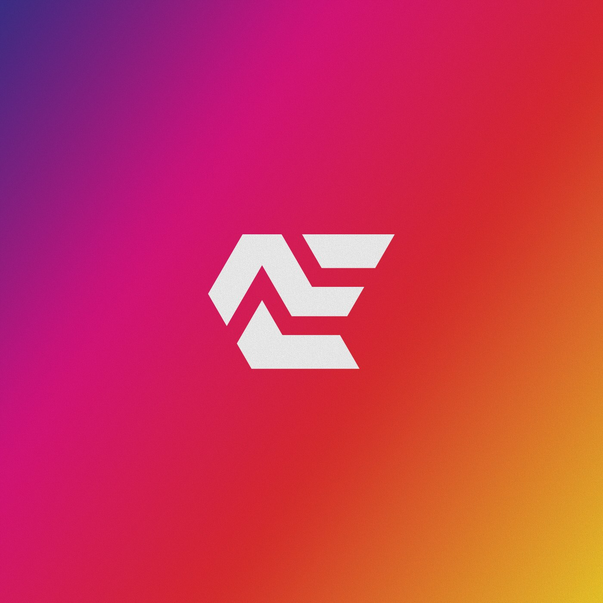
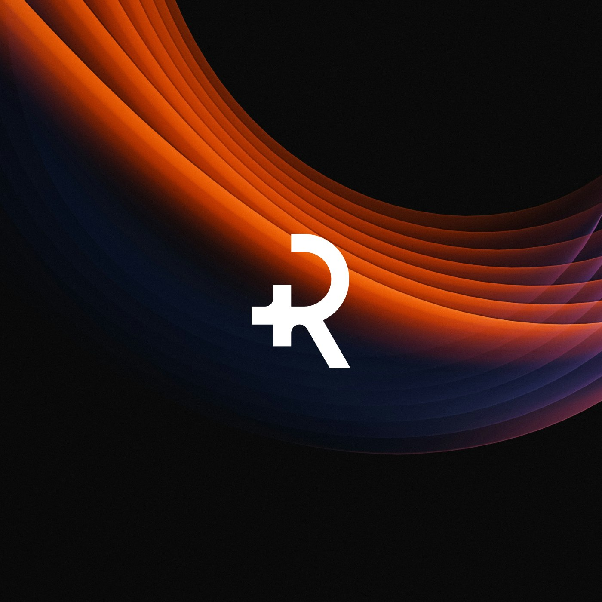
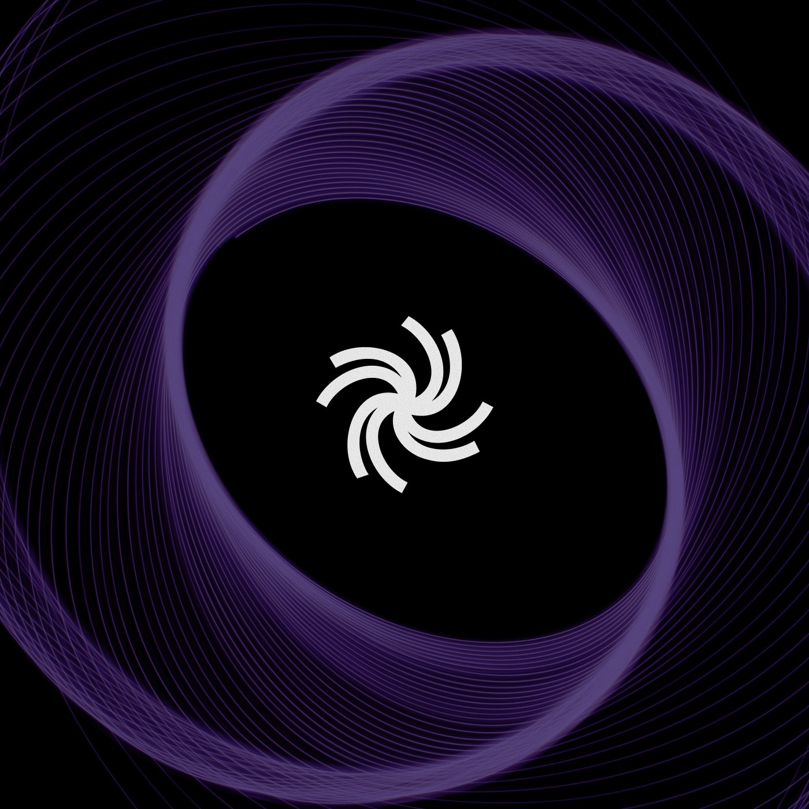
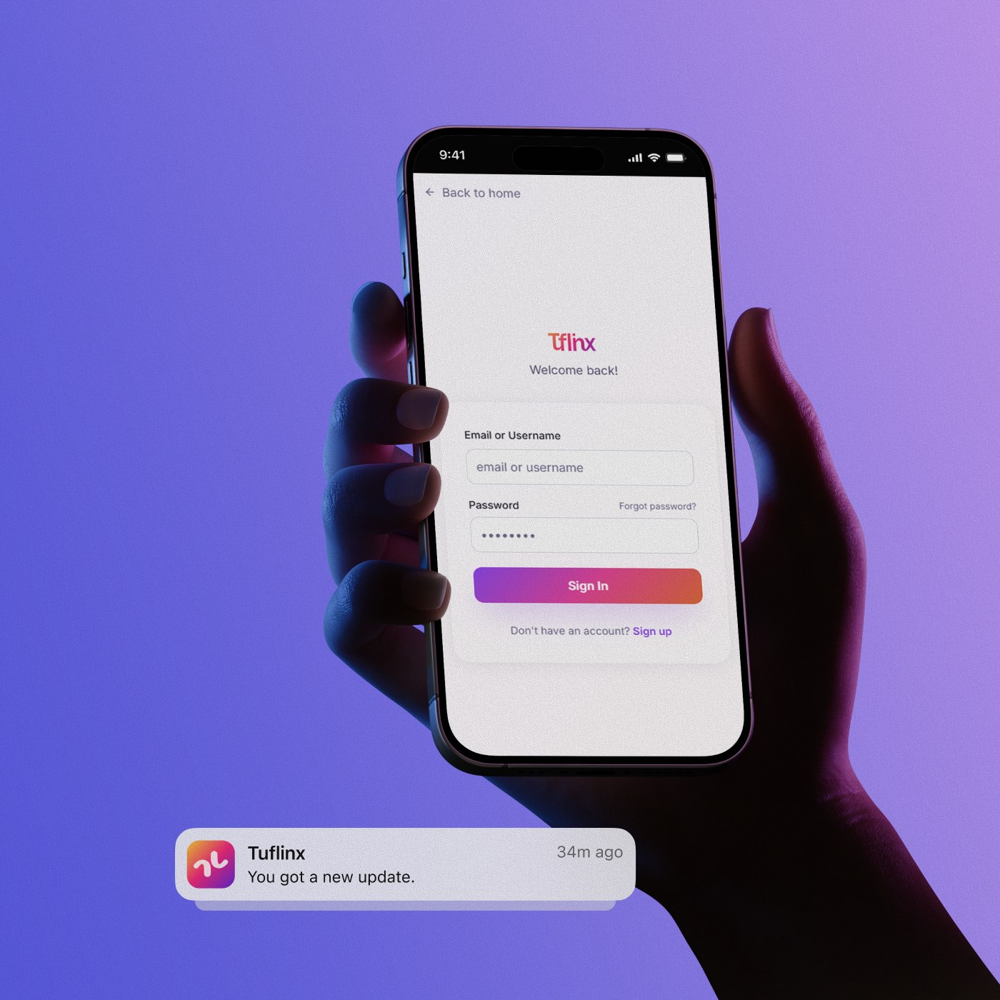
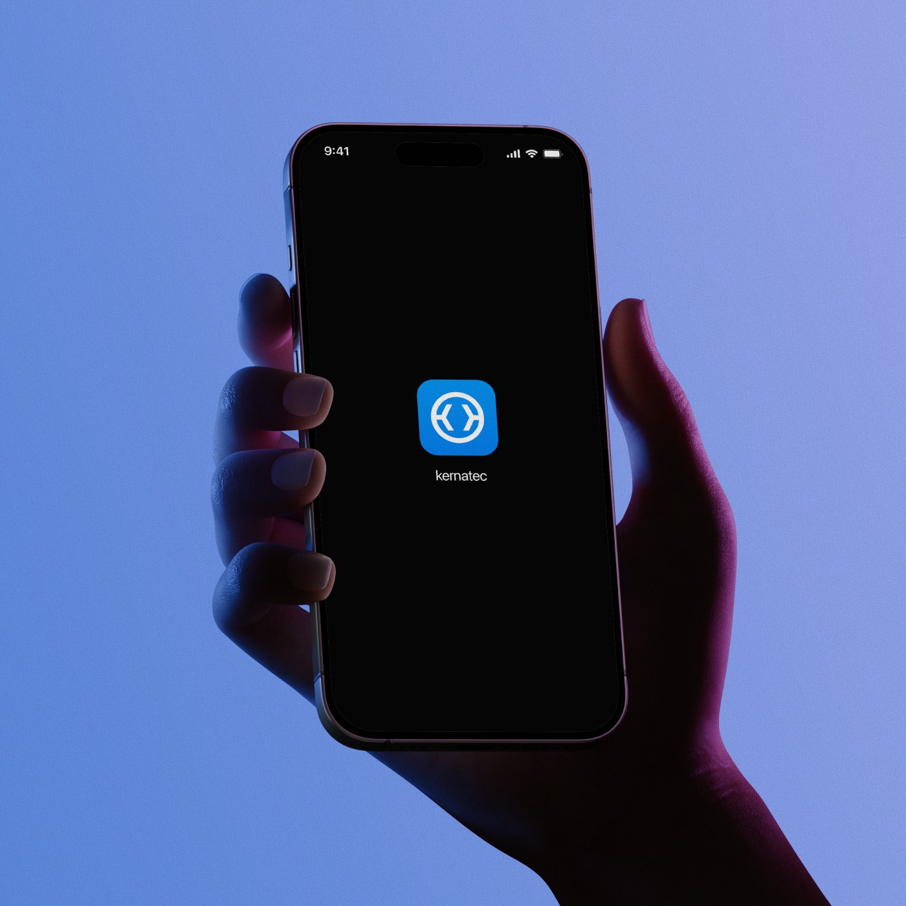
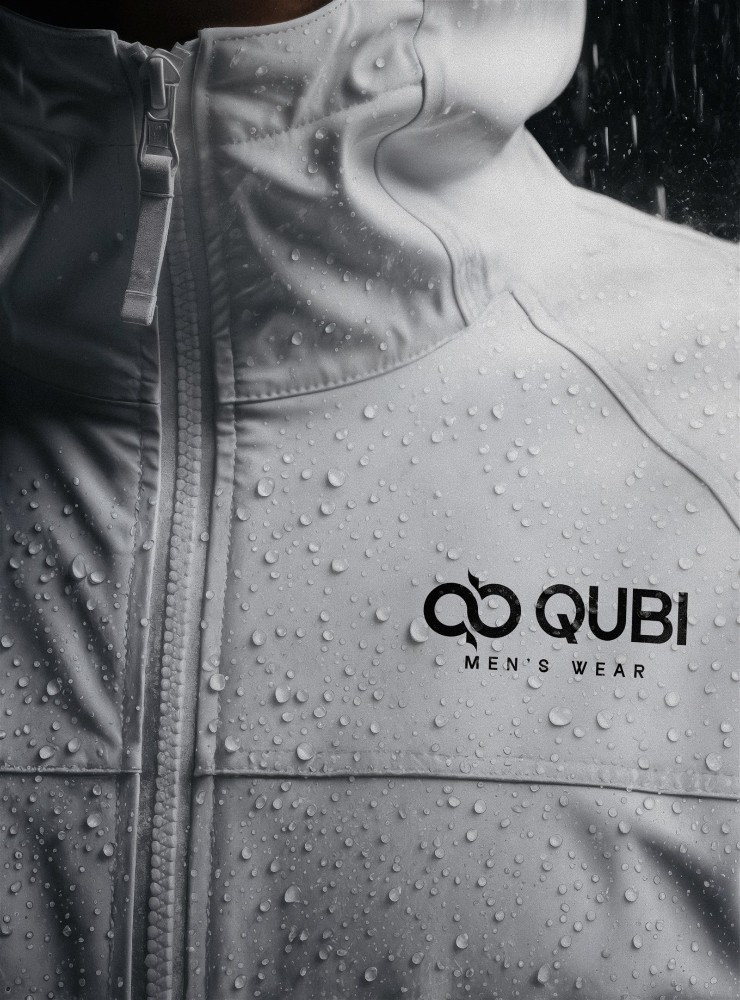

01Ali Ezzat
Logo design · Personal identity
A vibrant monogram identity combining the initials A and E into a sharp, modular mark with flexible gradient and monochrome applications.
A graphic and social media designer creating bold visuals, memorable brands, and content that makes people stop scrolling.
I’m Yousef, a 24-year-old graphic and social media designer focused on creating visuals that communicate clearly and capture attention.
I create social media campaigns, brand identities, advertising designs, and digital content. My goal is to combine strategy and strong visual craft to help every brand feel distinctive.
Six selected identity projects spanning technology, digital products, personal brands, and fashion.

01Logo design · Personal identity
A vibrant monogram identity combining the initials A and E into a sharp, modular mark with flexible gradient and monochrome applications.

02Logo design · App identity

03Logo design · Digital identity

04Logo design · Digital brand
A friendly adaptive wordmark and app identity for a bio-services website, supported by colorful digital touchpoints and interface applications.

05Logo design · Technology brand

06Logo design · Fashion identity
Replace these sample roles with your own clients, studios, responsibilities, and creative achievements.
Self-employed · Cairo / Remote
Creating social media visuals, campaign concepts, and brand assets for businesses across different industries.
Agency Placeholder · Cairo
Designed platform-ready content, advertising sets, and monthly visual systems for multiple brand accounts.
Studio Placeholder · Hybrid
Supported branding and marketing projects while developing strong skills in layout, typography, and image making.
I combine visual strategy and hands-on craft to turn a message into content people remember.
Typography · Layout · Advertising · Posters · Print and digital design
Content systems · Campaign visuals · Carousels · Stories · Paid ads
Adobe Photoshop · Illustrator · InDesign · After Effects · Figma
Art direction · Visual storytelling · Brand consistency · Problem solving
Consistent, engaging posts, stories, carousels, and advertising visuals made for every platform.
Logos, colors, typography, and visual guidelines that give your business a recognizable personality.
Creative concepts and flexible visual systems for launches, promotions, and digital advertising.
“Yousef transformed our ideas into a clear visual identity and social content that finally felt like us.”
“The designs were creative, consistent, and ready for every platform. The whole process felt effortless.”
“A strong mix of creative thinking and attention to detail. Our campaign looked polished and memorable.”
Have a project, an opportunity, or simply an interesting idea?